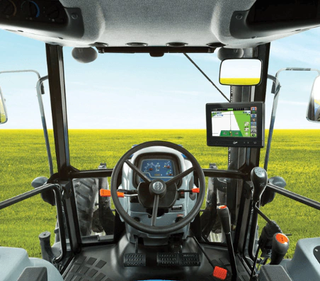
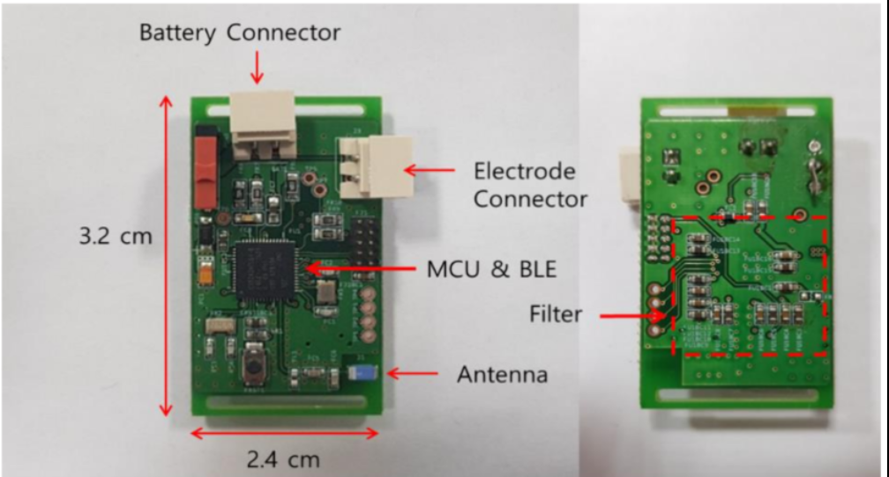
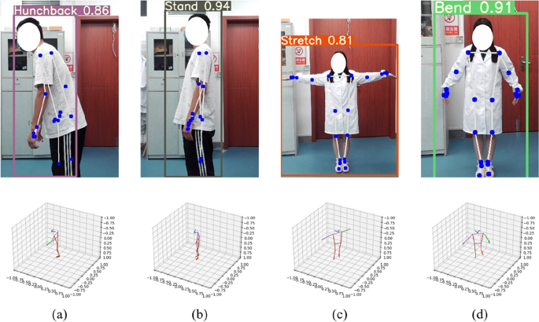
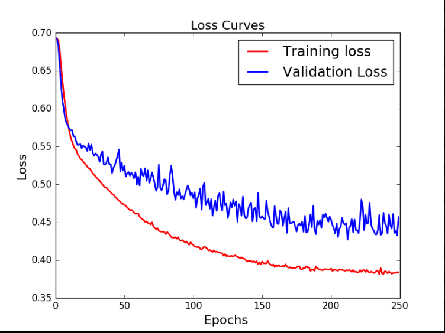

Featured Projects

AgriGPS with ESP32 & LVGL
Agricultural GPS navigation system built with ESP32 microcontroller and LVGL graphics library. Features real-time positioning, field mapping, and intuitive touchscreen interface for precision farming.

2-Wire ECG System
Minimalist electrocardiogram system using only 2 electrodes for heart signal acquisition. Custom-designed PCB with analog front-end for signal conditioning and digital processing.

Web Research Application with LLM
Modern web application AI research assistant inspired by Perplexity AI. Built with Python Flask and Google Gemini API for intelligent answers through web searches and real-time content analysis.
View on GitHub
Real-time Posture Analysis
Computer vision solution using Mediapipe and OpenCV for posture capture and analysis. Uses body keypoints to evaluate and provide real-time feedback on user posture for ergonomics.
View on GitHub
Solar Inverter Monitoring via Modbus
Python tool for acquiring data from solar inverters via Modbus protocol. Data is automatically processed and integrated with Grafana for real-time monitoring and detailed analysis.

Machine Learning Pipelines
Designed and implemented ML pipelines for various applications: conductance regression, vehicle price estimation, sentiment analysis with NLP, and image classification with CNNs.